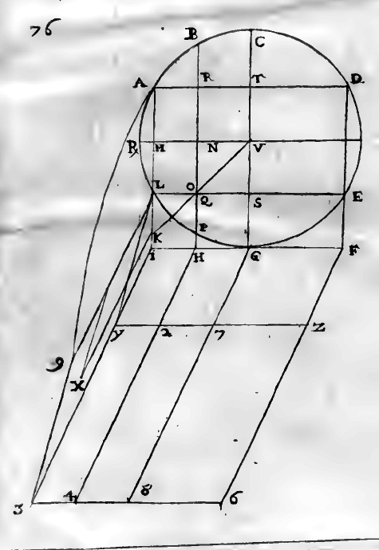

Propositio IX · Theorema IX¶


PROP. IX. THEOR. IX. (tab. 9. fig. 76, pp. 71–73)
Ostendendum est in hac sequenti figura, quod prisma, cuius oppositae bases sunt triangula AI3, DF6, vnà cum eo prismate, cuius oppositae bases sunt triangula LYI, EFZ, dempto quadruplo pyramidis, cuius basis KXM, & vertex V, cum illo prismate item ablato, cuius basis triangulum AL9, vnumque latus recta AD, aequale est duabus cylindri portionibus L98ESG, & L7ESG.
Sit cylindrus duobus planis diuisus, ita vt sectiones A98D, AGD sint segmenta ellipsium, vel circulorum (in marg. tab. 9. fig. 76.), quae secent sese secundùm rectam AD supra centrum V circuli vel ellipsis AGD; secta verò bifariam AD in T iungatur TV, quam vtrinque protrahamus, vt occurrat circulo, vel ellipsi AGD in punctis C, G; indè sumpta GS aequali ipsi CT, per puncta V, S, & G agantur aequidistantes rectae AD, vt sunt VM, LSE, & HG, quae vtrinque productae occurrant duabus iunctis AL, DE protractis in puncta I, & F; tum autem duc G8 latus cylindri, & à punctis I, F lineas I3, F6 aequidistantes eidem lateri G8, occurrentesque lineae transeunti per 8 parallelae ipsi IGF, in punctis 3, 6: iunctis praeterea rectis 3A, 6D, 8T, extendamus per lineas 3I, IA planum secans cylindri portionem intra proposita segmenta interceptam, faciatque in ipsius superficie conuexa, oculisque subiecta lineam 9L. Et quia 3I parallela est cylindri lateri G8, imò axi eiusdem cylindri, & recta ILA parallela est ipsi GC, cum
f. 0089 · p. 72planum C8G per axem extensum, sit aequidistans plano per 3I, IA; erit recta 9L latus cylindri, & ideò parallela lineae G8; Indè ducta à centro V linea VK, diametro nempe parallelogrammi contenti lineis V, VG in angulo VG, agatur in plano trianguli AI3 linea KX ipsi 3I aequidistans, & MX, LY eidem 3A parallelae; conueniantque MX, KX in puncto X; recta verò Y7Z aequidistet ipsi IF. His suppositis concipiamus prisma, cuius oppositae bases triangula AI3, DF6; itemque aliud bases habens oppositas triangula LYI, EFZ; indè pyramidem, cuius basis triangulum MKX, vertex autem punctum V. Dico praedicta duo prismata, dempto composito ex quadruplo dictae pyramidis, & prismate cuius basis triangulum AL9, & altitudo eadem, quam habent praedicta duo prismata, aequale esse duabus cylindri portionibus L98ESG, L7ESG.
Quoniam quadratum IA aequale est quadratis AL, LI, vnà cum duplo rectanguli ALI, erit quadratum IA aequale quadrato AL vnà cum duplo rectanguli AIL, dempto quadrato IL; sed duplo rectanguli AIL aequatur duplum quadrati MK; ergo quadratum IA aequale erit quadrato AL vnà cum duobus quadratis MK - LI; proptereà triangulum A3I maioris prismatis aequale erit triangulo A9L portionis cylindri, simul cum duplo trianguli MKX pyramidis, dempto triangulo LYI prismatis minoris (sunt enim haec triangula inter se similia, & similiter descripta super lateribus dictorum quadratorum). Praeterea quia duplex rectangulum BHP, hoc est duplex quadratum ON, superat duplum rectanguli RPH duplici rectangulo QHP, & quadrato PH bis item assumpto, hic autem excessus aequatur quadrato QH - QP ✠ PH; erit duplex quadratum NO maius quam duplum rectanguli RPH quadrato QH - QP ✠ PH, vel, quod idem est, duplum quadrati NO - QH ✠ QP - PH aequale erit duplici rectangulo RPH; additisque communiter quadratis RP, PH, quadratum RH aequale erit duplici quadrato NO, vnà cum quadratis QP, RP - QH: nam addendo quadratum PH ad - PH nihil remanet. Quare etiam triangulum R4H maioris prismatis aequale erit triangulis sibi ipsis similibus, & similiter descriptis super dictis quadratorum lateribus tanquam basibus, nempe duplici triangulo, cuius basis NO praedictae pyramidis, vnà cum illo, cuius basis RP cylindri portionis inscriptae maiori prismati, simul
f. 0090 · p. 73etiam cum eo triangulo in basi QP constituto, cylindri portionis inscriptae minori prismati, dempto triangulo QH2 eiusdem minoris prismatis.
Tandem quia quadratum TG aequale est sibi ipsi vnà cum quadrato SG eodem dempto, erit triangulum TG8 maioris prismatis aequale eidem triangulo TG8 portionis maioris cylindri vnà cum triangulo SG7 minoris cylindri portionis, dempto eodem triangulo SG7, vtpote prismatis minoris; Cum igitur omnia triangula AI3, RH4, TG8 &c. semiprismatis maioris, aequalia sint duplo omnium triangulorum pyramidis MXKV, nempe MKX, eorumque, quorum bases NO &c. vnà cum omnibus triangulis, nempe AL9; ijsque quorum bases RP, TG &c. maioris semiportionis cylindri inscriptae praedicto maiori semiprismati, simul cum omnibus triangulis, nempe SG7, ijsque quorum bases QP &c. minoris semiportionis cylindri inscriptae minori semiprismati LYG, demptis tamen omnibus triangulis LIY, QH2, SG7 &c. dicti semiprismatis minoris; erit semiprisma, cuius oppositae bases triangula AI3, TG8 aequale duplo pyramidis, cuius basis triangulum MKX, & vertex V, vnà cum duabus semiportionibus cylindri (quarum maior est illa, quae intercedit inter duo triangula AL9, TG8; altera verò est comprehensa à minori semiprismate TLG) dempto eodem semiprismate. Quod si minus hoc semiprisma addatur communiter, auferatur verò illud, cuius basis triangulum AL9 in eadem altitudine in qua sunt duo dicta semiprismata, supererit prisma, cuius basis trapetium L93I in eadem praedicta altitudine, quod vnà cum minori semiprismate aequale erit duplo dictae pyramidis simul cum duabus semiportionibus cylindri, quarum maior latet inscripta sub dicto quadrangulari semiprismate, alia verò sub minori; Et eorum duplicia, hoc est prisma 93IL6 vnà cum prismate YLIZ erit aequale quadruplo pyramidis, cuius basis triangulum MKX, & vertex V, vnà cum duabus portionibus cylindri L98ESG, L7ESG; si igitur auferatur communiter quadruplum dictae pyramidis erunt dictae duae cylindri portiones aequales solido rectilineo quod remanet ablato praedicto quadruplo, quod &c.